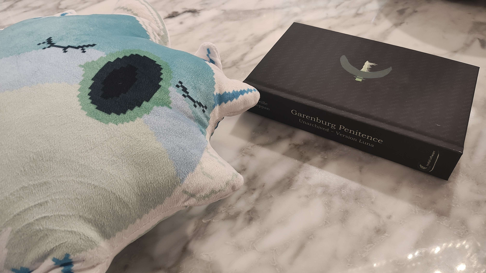

Hello there! Been a little while since the last news update, I didn't even write one for when Garenburg Penitence released... Very weird to not be writing "yes it's still in development," but here we are!
Garenburg Penitence - Post-release Rambles
Garenburg Penitence released on May 30th earlier this year, and it is very weird to say that. That's a game that took eight years of planning, and then five years of active development. There were so many moments where I wasn't even sure if it was ever going to be finished, yet it's done and released.
Was it a success?
Well, most certainly in my eyes!
Curious about the sales info? Here it is. Retail units are Steam key activations and not real purchases, but the rest are actual sales. The game got 14 reviews (3 didn't count to the review total so it shows 11...) and all are positive and that's really cool! If you are curious, Garenburg Woods has significantly more sales (188, made $374) but been out for longer. It does have less reviews than Garenburg Penitence though, which makes sense since Garenburg Penitence has a lot more polish to it...
Are these numbers anything great? No. They are horrible if I was making games for money. But I made the game because I wanted to.
And I'm extremely satisfied with the results. I read the reviews and comments and look at what I can for any possible reception for my games, and I don't know how to put into words how I've felt reading responses. It's weird to think that there are people out there who actually like what I put out and made. So... yeah. I don't know. I'm really happy there. I just want to say thank you because there is a weird bubbly feeling that won't go away and I feel honored that anything I've done has made any impact on anybody. I've been impacted heavily by video games myself on things I've learnt from them, topics and other stuff they have imprinted on me as a person. To think that anybody might have been similarly moved by a game and it being a game I made is a feeling I really can't describe. It means at least that I've achieved one of my biggest life goals with this stuff.
The game's also received quite a fair few patches... mostly balancing ones and a few minor bug fixes. There's still one annoying bug that's just so rare that I have not been able to reproduce it and it is driving me nuts trying to fix. Oh well. Next up.
Merchandise?!?!?!?!
Hello I like money
I'm kidding this thing makes me like nothing. I have it set so I only earn a dollar for most things and you can read how much it says I profit from the website in its description.
If you want to see some wacky Garenburg merch, I have a site here and it has a few small items. I just have fun messing with this site making potential merch because it's stuff I'd want to buy one day. I only have the Airfish plush from the site right now... I'll get the Immortal Imperatrix t-shirt sometime though!
Let's go onto upcoming plans.
September: New Garenburg Game???
I started working on a project juuuuust two weeks ago (September 4th) and it's almost done and will be dropping tomorrow! The new game is bygone snow, a short visual novel for the Gameboy Advance. Yes, the Gameboy Advance. Mmmmmphf homebrew

This game has some music from the great Kishan02, who made the soundtrack for Darn Guy Adventures. Check his stuff out and that game if you haven't, I highly recommend them!
It's being made for the Spooktober 7th Annual Visual Novel Jam, so that'll be interesting to see the results of it. If you're from the future, the game page can be accessed here. Though if you were to try now, the page is restricted so you can't play it yet.
If you just want a quick little thing about what the game is about...
When the world ends, who will you spend your final hours with?
I hope you enjoy it! It'll be free and all.
October: Garenburg Penitence Artbook
Oh yeah uh that's happening!
I put in the request for Steam to review it, so it'll be a minute for the page to go up but in October, an artbook for the game will be ready. It will go over a ton of unused art, higher resolution pieces and the like and it'll be available for free! The book is already like a hundred pages but I got so much more to add to it... grahh...
November: Garenburg Penitence Novelization
Oh yeah that's ALSO happening.

I received a test print of the book a month ago, and it's super cool! This is a hardcover copy of it from Barnes & Nobles. I need to do more work on it, but I'll be putting up a digital version of it on Steam for $3 as DLC and it will be available separately on B&N as well as Amazon.
I've always wanted to publish a book and be an author. And Garenburg Penitence was the game I dreamed about making for a large part of my life. So I'm checking off the bucket list because I can!
There will be no exclusive content to the book, and it's kind of an inferior way to experience the story as the game itself is better suite for everything... but hey, it will exist and be out in the world. It's being done because again, it's something I want to do!
The goal is Marjory's birthday, November 18th.
December: bygone snow Steam Release
Okay so I will put the game on Steam.
I might also remake it and have it be HD to justify charging one dollar for the Steam release while keeping the GBA version free
yeah that's it
January: Archival Anemoia (game collection)
This has been in the works for several months now, but I will be putting ALL of my games on Steam. All the free stuff will be coming in their best, definitive edition versions here, and then some!
Some will even get Steam achievements. There will be some reflections and context given for all of them, a nifty launcher, just a bunch of nice and silly little random stuff for it. That way, you can just... go to Steam if you want to check out any of the other Garenburg-related titles that aren't Garenburg Woods or Garenburg Penitence. More on that in the future!
Beyond That
Still want to remake The Möbius Strip in 3D, still want to do a bigger project I'm planning with an idea that's been around for a long while. But that will be allllll for the future to worry on.
For now... Thank you again for reading. Really. My games and projects and junk are my entire passion and something I live for. It means the world to me that anybody might even remotely care about them. I'll keep chipping away at the grind. Thank you for your time, and have a good day! I hope you enjoy bygone snow once it releases!
- Mireille